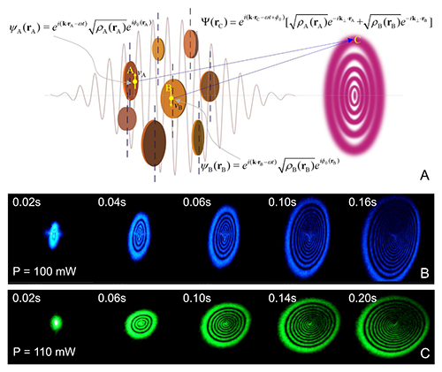

层状量子材料的电子相干性
量子材料电子相干性的产生对于多体相互作用及关联调控有重要的意义。然而，这并非易事，许多先进精密的电学实验方法是非相干的,不能诱导和测量集体激发态。相干光与物质相互作用可以自然地将光场所固有的相干性传递给量子材料，可用于调控电子的相干性。这种相干性的传递是否能实现，取决于光与物质相互作用的形式，以及物质的电子结构。
最近，中国科学院物理研究所/北京凝聚态物理国家实验室（筹）表面物理实验室赵继民副研究员与孟胜研究员合作通过空间自相位调制，在具有帯隙的2D层状量子材料MoS2中诱导实现了交流的电子相干性。不加光场时，离散的MoS2片层悬浮于液体中，电子完全独立，相互之间无相位相干。用超快激光脉冲照射后，通过光与物质的空间自相位调制散射（Fig. 1A），非局域的电子波函数相位变得与超快激光脉冲一致，它们的相位被完全锁定。这种相干性是一种光诱导的电子集体行为。作者提出一个"风铃模型"来解释这种演生现象。他们通过对空间自相位调制衍射环形成所需的时间的测量，进一步证实了这种非局域电子相干性的存在（Fig. 1B & 1C）。
他们研究了不同波长激发的，依赖于带隙的空间自相位调制（Fig. 2 & 3A），发现这种电子相干性的产生适用于普遍的二维层状量子材料，具有普适特性。他们的实验首次观察到低于帯隙的空间自相位调制，证实了包括双光子空间自相位调制在内的物理机制（Fig. 3B & 3C）。
他们通过实验证明，这种非局域交流电子相干性可以用来实现双色全光开关，且具有一些优异性能（Fig. 4）。特别是，控制光束能够调控信号光束的相位，用很小的强度改变可引起强光信号光束的衍射环在空间发生变化，实现了弱光控制强光的开关效应。这是人们首次实现基于空间自相位调制的全光开关效应，这些工作为二维层状量子材料在光子学中的应用提供了基础。
此项工作得到了科技部重大基础研究(973)计划、国家自然科学基金和中国科学院对外合作重点项目的支持。该工作发表于近期的Proc. Natl. Acad. Sci. USA 112, (38) 11800-11805 (2015). 相关链接：http://dx.doi.org/10.1073/pnas.1504920112.

Fig.1风铃模型和非局域ac电子相干性的光诱导演生
Fig.2通过变波长空间自相位调制实验直接测量χ(3)及其对帯隙的依赖关系
Fig.3 χ(3)、吸收和阈值随帯隙的变化，以及空间自相位调制的物理机制
Fig.4 基于空间自相位调制的双色全光开关
石墨烯片中的光致发声现象
光与凝聚态物质的相互作用非常丰富多彩，相干性的产生与调控是特色之一，它的物理本质是将光的相干性传递给凝聚态物质。光致发声是把光照射到凝聚态物质上，从而产生声波。这一研究领域因几年前利用碳纳米管薄膜通过电致发声制备出扬声器而引起广泛的关注和兴趣。但是，光致发声效应在一般材料中很弱，很少在实验中观测到；要在光致发声中实现相干调控，则更加困难，此前实验上还没能做到。
最近，中国科学院物理研究所/北京凝聚态物理国家实验室（筹）表面物理实验室SF05组赵继民副研究员和陆兴华研究员等与美国德克萨斯大学奥斯汀校区施志刚教授、清华大学微电子研究所/清华信息科技国家实验室任天令教授、中科院物理所魏志义研究员（L07组）等合作在多层石墨烯片中发现了光致发声现象。这是国际上第一次在石墨烯材料中观察到这一现象。他们通过对时域和频域的声谱联合分析，特别是对比fs、ps、ns超快激光脉冲激发下的不同实验结果，提出了石墨烯片中光致发声的物理机理，指出这种材料中的光致发声是一种光-热-声过程，而非直接的光-声过程：光子的能量先传递给光生载流子（即电子），然后通过这些光生载流子把能量传递给热声子，最终通过热声子与周围环境的空气分子的作用，形成声波。石墨烯材料中特有的强电-声子相互作用在光致发声现象中发挥了至关重要的作用。在这项研究中，他们第一次发现了非简谐声波的存在，正是基于这一发现，他们运用超快激光脉冲技术实现了光对声波的相干调控，声波的相位差和强度可由脉冲重复频率精确控制。他们的这项工作为石墨烯在光能利用、光学扬声器、无接触声学装置等方面开辟了新的应用前景。
此项工作得到了国家自然科学基金、科技部国家重大基础研究(973)计划和中国科学院对外合作重点项目等项目的支持。该工作发表于近期的Scientific Reports 5,10582 (2015).
.png)
图一 光波在石墨烯片层上通过电-声相互作用产生热，热再产生声波。
图二 光-热-声物理机制的验证：脉宽对比实验和时域-频域分析。
图三 光致发声的相干调控：通过改变光脉冲重复频率来调控声波相位差和强度。